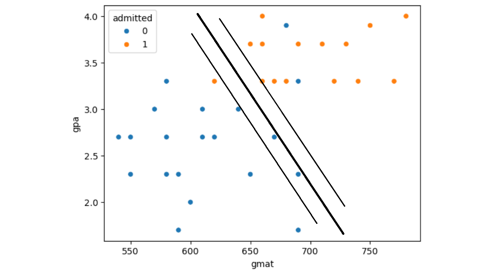
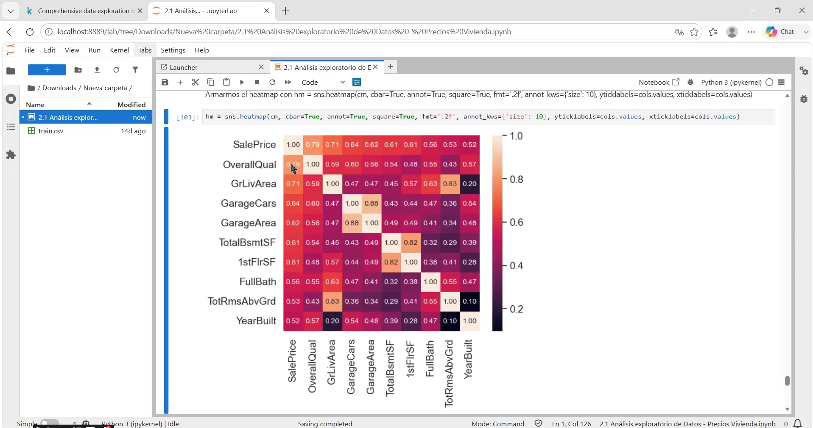
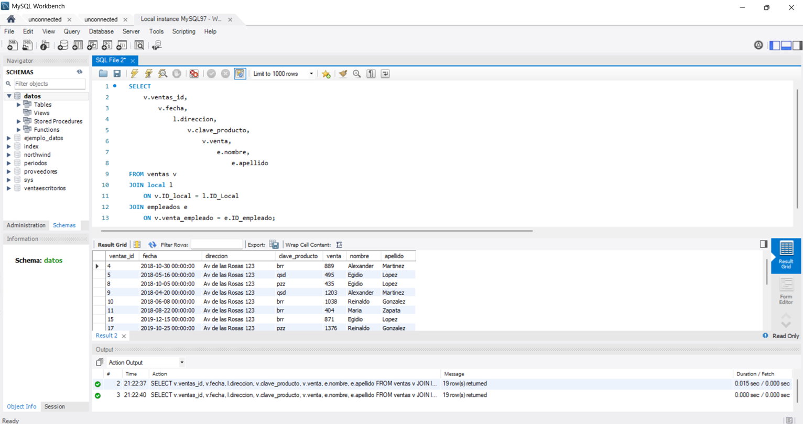
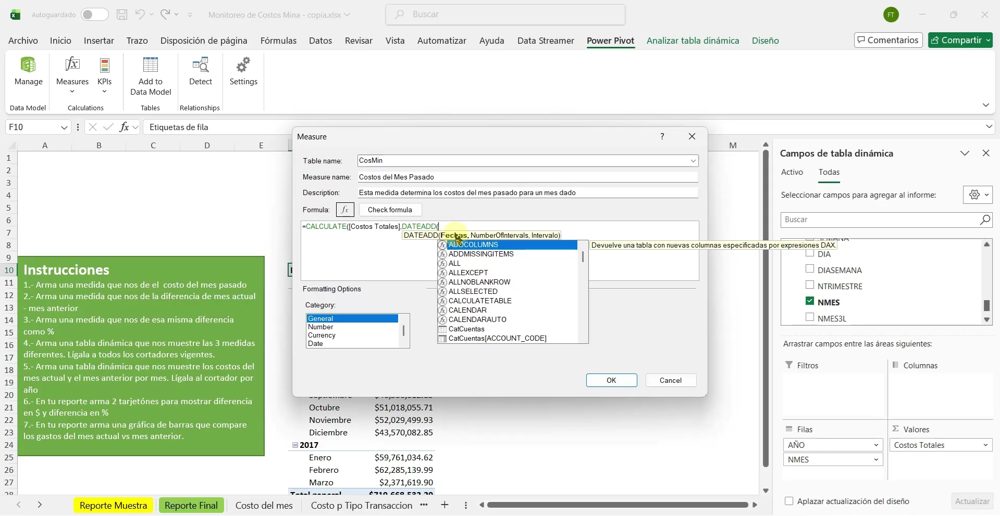
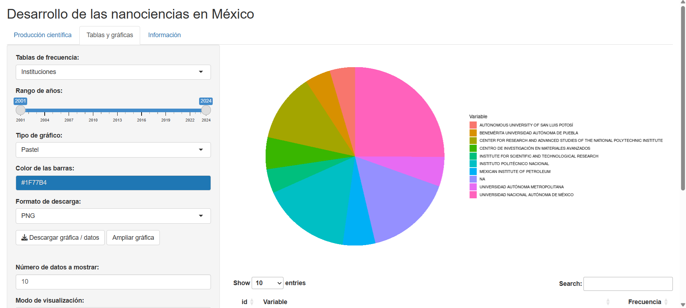
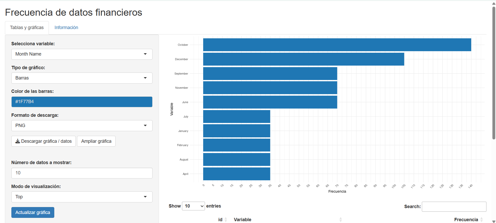

Bienvenidos a la página de Fernando Torres. Soy estudiante de la UNAM en proceso de titulación y estoy muy interesado en las nuevas tecnologías. Estoy orientando mi perfil profesional al análisis de datos con Python, SQL y Machine Learning.
Actualmente estoy fortaleciendo principalmente mis conocimientos en Python, SQL y Machine Learning con prácticas y cursos. A continuación muestro mis proyectos y prácticas.
Tengo 28 años
Vivo en CDMX
Celular: 55-4547-1533
Correo:
fernandotorresvazquez90@gmail.com
Me encuentro en formación en Machine Learning, donde he estudiado los fundamentos del aprendizaje supervisado y no supervisado.
En mis practicas de Machine Learning he realizado proyectos de principio a fin, abordando etapas como la obtención y exploración de datos, análisis de correlaciones, separación de conjuntos de entrenamiento y prueba, tratamiento de valores faltantes, codificación de variables categóricas, escalamiento y construcción de pipelines con Python, Pandas y Scikit-learn.
He estudiado algoritmos de regresión y clasificación, incluyendo regresión lineal y logística, regresión polinomial, Ridge, Lasso, Elastic Net, máquinas de vectores de soporte (SVM), árboles de decisión, Random Forest y métodos de aprendizaje en conjunto como Bagging, AdaBoost y Gradient Boosting. También he trabajado con conceptos de descenso del gradiente, regularización, curvas de aprendizaje y análisis del equilibrio entre sesgo y varianza.
También estudié técnicas de evaluación de modelos con métricas como RMSE, accuracy, precisión, recall y curvas ROC, además de validación cruzada y ajuste de hiperparámetros con Grid Search. En aprendizaje no supervisado, estudié técnicas de clustering como K-Means, DBSCAN y mezclas gaussianas, métodos de reducción de dimensionalidad como PCA, Kernel PCA y LLE.
Ademas de las practicas anteriores, hice un curso en Ciencia de Datos impartido por el IIMAS. Tuvo una duración de un mes y las clases fueron en línea. Todo forma parte de mi preparación continua en Ciencia de Datos.

Descargar Constancia IIMASRealicé un análisis exploratorio de datos utilizando las bibliotecas Pandas, NumPy, Matplotlib y Seaborn, a partir de una base de datos sobre precios de viviendas. Durante esta práctica trabajé con la limpieza, manipulación y exploración de datos, estadística descriptiva y visualización con histogramas, diagramas de dispersión y diagramas de caja. También elaboré matrices de correlación para identificar relaciones entre las características de las viviendas y sus precios de venta.

Ver video de “Python #1” en YouTube
También hice un curso en línea impartido por A2
Descargar Certificado A2He realizado ejercicios y prácticas con SQL y MySQL, trabajando con consultas sobre una y varias tablas, filtros, operadores, ordenamiento y JOIN.

Ver video de “SQL #1” en YouTube
También hice un curso en línea impartido por A2
Descargar Certificado A2Además de las áreas en las que estoy concentrando mi desarrollo profesional, también he realizado prácticas utilizando otras herramientas para el análisis. Para Power BI he realizado practicas con Power Query, Power Pivot y medidas DAX. Dejo links abajo donde muestro mis practicas en YouTube.

Ver video de “Power Query #1” en YouTube
Desarrollé esta aplicación durante mi servicio social en el IIMAS utilizando R y R Shiny
La aplicación utiliza la base de datos NanoMx_hasta2024_v2.xlsx para graficar la información sobre la producción de documentos científicos relacionados con las nanociencias en México. Las gráficas se muestran en el lado derecho de la página y en el lado izquierdo se ha colocado un panel para filtrar por año, sexo, institución, etc. La app fue desarrollada durante aproximadamente seis meses. Ya ha sido publicada dentro de la página oficial del proyecto institucional PAPIIT IN302623.
Para abrir la app solo da clic en los enlaces de "Ver primera app" o "Ver página del proyecto". Te llevará al sitio y solo debes esperar un momento a que cargue, después solo das clic en el botón [Actualizar página]. En caso de que se presente el mensaje Error: An error has occurred. Check your logs, solo debes volver a dar clic en el botón [Actualizar página].

Ver primera app en shinyapps.io
Ver página del proyecto institucional PAPIIT IN302623
Esta segunda aplicación tiene la misma idea de leer una base de datos con la diferencia que no está sujeta a aceptar columnas especificas, sino que es dinámica y acepta cualquier base de datos, por tanto, en la lista desplegable se mostrarán todas las columnas que el archivo incluya. Como muestra se decidió utilizar una base de datos financieros que Microsoft ofrece para realizar pruebas.

Durante la carrera realicé prácticas relacionadas con Estados financieros (balance general, estado de resultados, flujo de Efectivo), razones financieras, matemáticas financieras, etc. También revisamos teoría sobre mercados financieros, banca central, inflación, etc.
Cuento con conocimientos generales sobre el diseño y estructuración de bases de datos.
Realicé un Diplomado en Ingeniería de Software en la DGTIC, donde adquirí conocimientos básicos sobre el proceso de desarrollo de paginas web, incluyendo requerimientos, diseño ux/ui, bases de datos y desarrollo en el framework de Laravel.
Como parte del diplomado anterior, participé en la gestión de la página web Sistema Integral de Información Académica Juriquilla (SIIAJ) para el Campus Juriquilla de la UNAM.
Mis actividades incluyeron administración de requerimientos, documentación, seguimiento de flujos de trabajo, pruebas de software y reuniones con clientes para revisar los avances del proyecto.
Ver página del proyecto institucional SIIAJ
Intermedio, B1